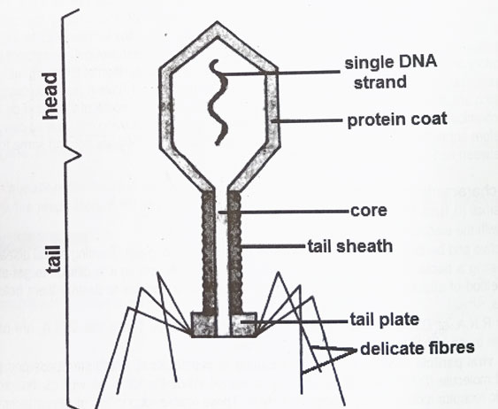

Back
Miscellaneous 2026 - Question 2
Draw a large labelled diagram of a T2 bacteriophage

Diagram of a T2 Bacteriophage
State the economic importance of viruses
Useful effects:
Viruses are
used in gene therapy
to treat genetic disorders.
Viruses are
used as vectors in genetic engineering
to introduce new genes into organisms.
Viruses are
used in vaccine development
.
Viruses are
used in biological control
to manage pest populations.
Viruses are
used in scientific research
.
Harmful effects:
Viruses
cause diseases
in humans, animals and plants, leading to health issues and economic losses.
Viruses can
lead to crop failures
and reduced agricultural productivity.
Viruses can
cause pandemics
, affecting global health and economies.
Why are viruses sometimes considered as non-living?
Viruses are sometimes considered non-living because:
They
cannot carry out metabolic processes
characteristic of living things such as respiration, nutrition, growth and excretion.
Viruses
do not have cellular structures
.
They
can be crystallized
like non-living substances.
They
cannot reproduce on their own
and require a host cell to reproduce.
Back